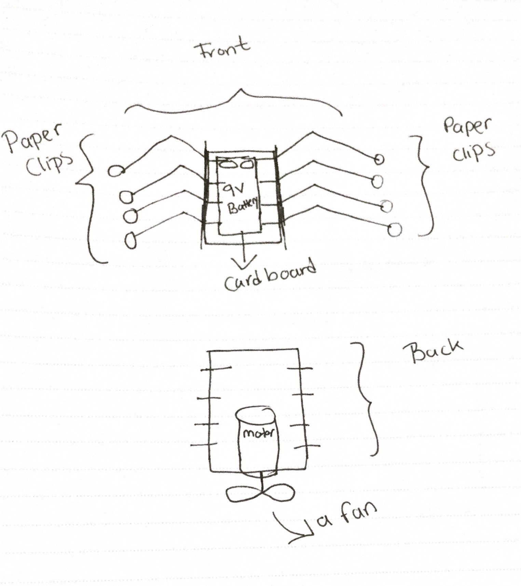
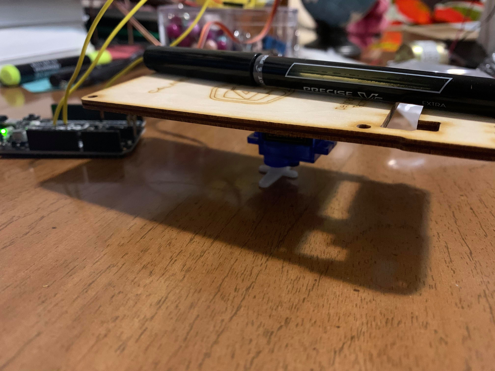
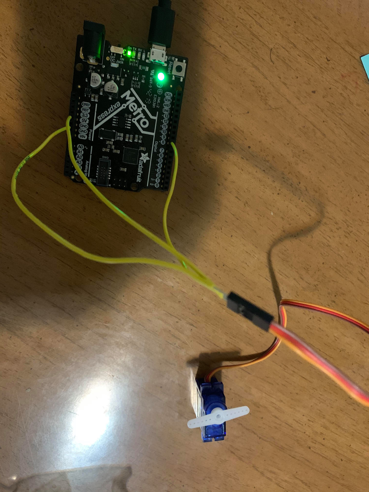
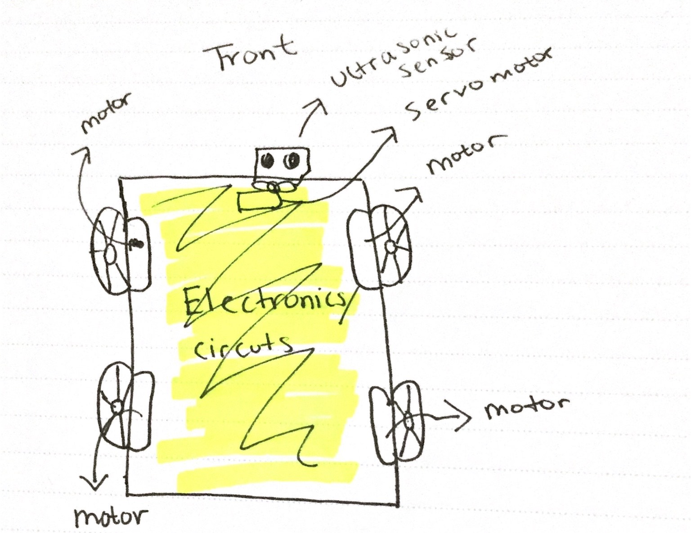
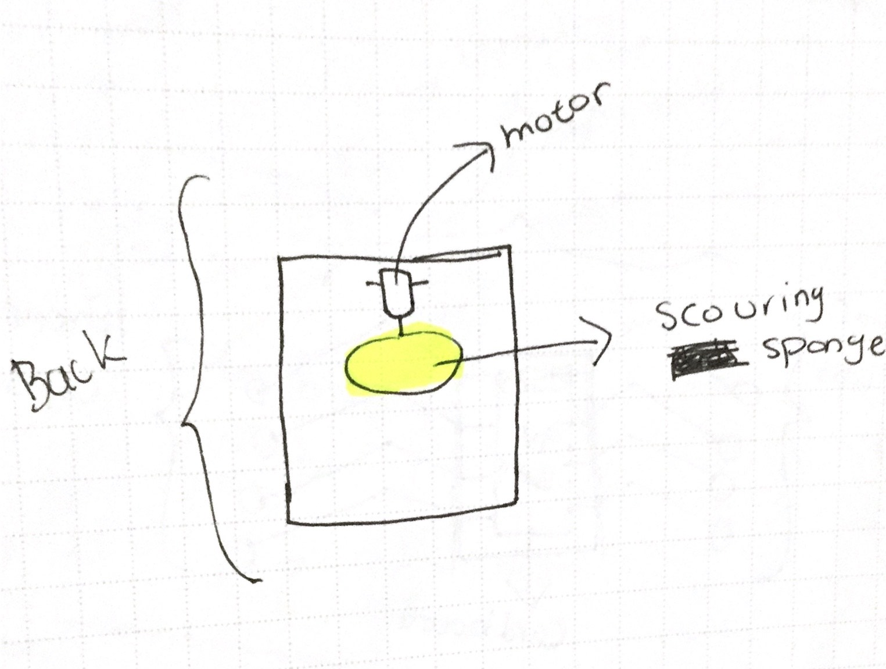

For the rapid prototyping assignemnt, I have sketched a kinetic sculture and a prototype that I might possibly use as part of my final project. The first image is a design I sketched to visually recognize what components I need and want to include on a movable mini spider. I demonstrated the webs of the spider using paper clips. Several basic components are needed in order to recreate this sketch including 9v battery, cardboard, mini ping pong balls, paper clips, motor, and a fan.
The second and third images are just the base of the sketch.
Since I was not able to successfully make my motor move, I played around with the servo motor a little bit. The image below shows how I was trying to turn the servo into an actual motor. I attached the board on top of the servo motor in order to see if it has the capacity to carry iteams. The speed of the servo motor was slow when an item was placed on top of it, but it was able to move around.  
Here is the code that was uploaded:
#include
Servo servo;
void setup() {
servo.attach(8);
servo.write(0);
delay(3000);
}
void loop() {
servo.write(90);
delay(1000);
servo.write(0);
delay(1000);
}
The last two sketches below are for my final project. I will make more modifications as I go along the course, but this is just the base of my final project.  